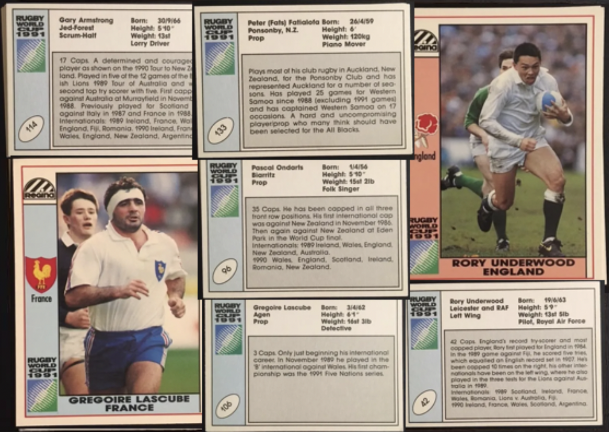

Rugby Stars Working Day Jobs
While players were making considerable salaries playing professionally, in the six-figures, a lot of players still needed to supplement their rugby with a regular profession.
Some of the favourites included lorry driver and Scotland scrum-half, Gary Armstrong, or RAF pilot from England, Rory Underwood and even Piano Mover, Samoan prop Peter Fatialofa.
Have a look at the collage to the right for some classic examples for click below for more!
Biggest Hitters in Rugby!
Back in the day, with less restrictions and looser rules of the game, the tackles and "hit-ups" that some players would produce have become a rarity in today's game. But it is for safety and well being of players (short and long term) as well as the betterment of the game.
Check out this compilation of some of the best hit-ups from the era!
How the Scrum Worked Back in the 90s
ROUGHER, TOUGHER AND MORE DANGEROUS.
With the increased size and weight requirements of today's rugby professions, especially the forwards, there's a big ephasis on player safety and with that comes increased safety in the scrums. A scrum pack of 16 men can come in at weighin upwards of 2 metric tonnes!
With that being said, during the 90s
Click the button below to read more about how the scrum works and how it's evolved!